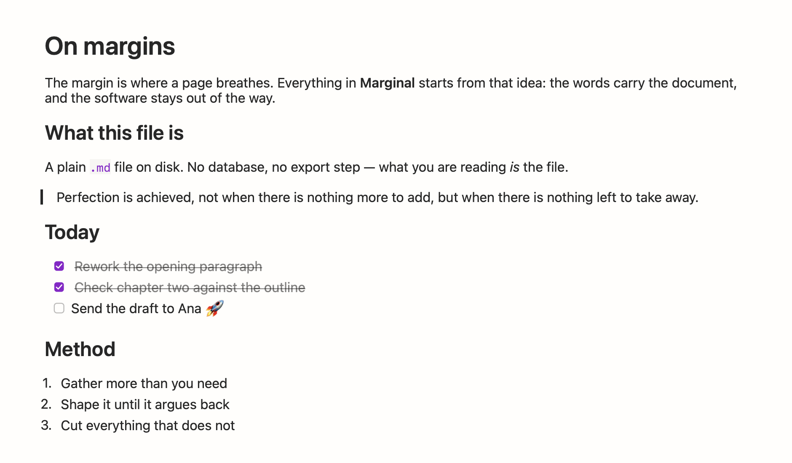
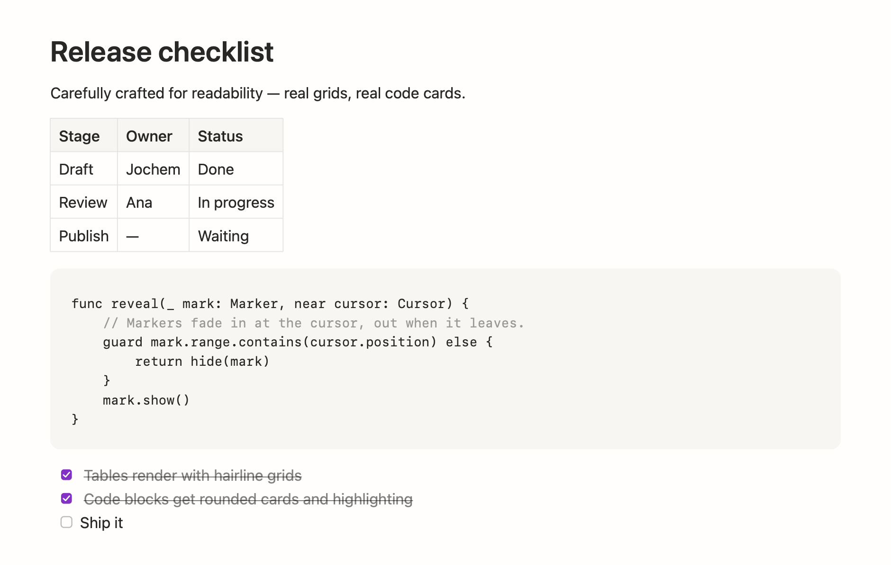

Native macOS · Open source
Markdown that reads the way it renders.
Marginal is a native macOS editor for plain .md files. The document renders live with beautiful, carefully crafted typography; the syntax hides itself except around your cursor.

The marks hide themselves.
Both panes are the same file. Every marker — **, #, - [ ] — renders invisible and fades back in around your cursor, so you edit the source without ever reading it.
what's on disk
# On margins
The margin is where a page **breathes**.
- [x] Hide the syntax
- [ ] Keep the file plain
Inline `code` stays quiet.what you see — cursor on "breathes"
On margins
The margin is where a page **breathes**.
- Hide the syntax
- Keep the file plain
Inline code stays quiet.
Markers fade in 120 milliseconds — they never slide, and they never reflow the line. Nothing is converted; the syntax was rendered invisible, not removed.
A Mac app, in the old-fashioned sense.
Built with AppKit, not a browser in a trench coat. It opens before you finish clicking, and it treats your files as yours.
True WYSIWYG
Marks like ** and # hide while you type and reveal at the cursor. One view — the document.
Plain files, forever
Documents are ordinary .md files on disk. No lock-in, no database. Works with git.
Native AppKit
Instant launch, low memory, real macOS behavior everywhere. It feels like a Mac app because it is one.
Tabs
Every document in one window, on the macOS-native tab bar. Switch with ⌘1–⌘9.
Copy both ways
Copy any selection as Markdown or as HTML — source into a commit, rich text into an email.
Light and dark
Paper by day, ink by night. Marginal follows the system appearance.
Beautiful by default.
Every detail is carefully crafted for readability — real table grids, rounded code cards with highlighting, task lists that strike themselves through, headings with room to breathe. Typography you can read all day.
